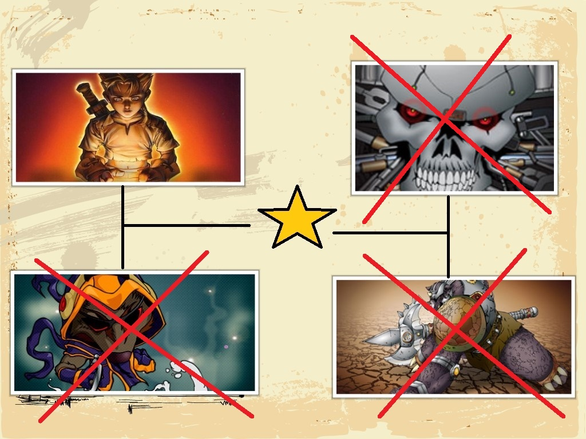

After defeating Hiruyoki, He told Kysser that he is just being controlled by the God of Deah (Shinigami). It was all the Shinigami's plan. The Shinigami will be immortal if it receives the blood of Archon, and the only two descendants of Archon are Kysser and her sister. In order to kill the Shinigami he must have the two legendary swords of Kusangi which is at the center of Slegorf Woods (protected by Troll) and the legendary sword of Kantusa which is at the top of Mount Aike (protected by Harpie). He also tells that the Shinigami is living at the Hellfire Precipice. Hiruyoki died after there bloody battle.
